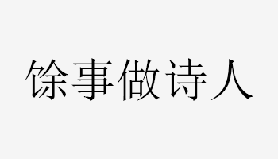

韵狸
一个热爱诗词书画的程序员
『做梦想做的事』
其他站点
语言
- 中文
- 古汉语
- 英语
技术栈
- 擅长使用 XML + XSLT + VScode + Git 技术栈编写 DITA 结构化文档项目。
- 熟练使用海内外 AI 大模型，将 AI Agent + MCP + Skills 融入日常开发，大幅提升工程效率。
- 操作系统:
Linux,Windows Server - 数据库:
MySQL,Oracle,PostgreSQL,MongoDB,SQLite,Redis - 语言:
HTML,CSS,JavaScript,Typescript,PHP,SQL,Markdown,XML,JSON,YAML,TOML,TeX,Java,Python,C,C++,C#,Go,Ruby,R,Rust,Kotlin,Swift,Objective-C,ArkTS - 框架:
Nodejs,Tailwind,Bootstrap,jQuery,Uniapp,Flutter,Express,Fastify,Remix,Angular,Bun,Vue,Vite,React,Nuxt,Next,Astro,Nest,Laravel,ThinkPHP,Webman,Django,JSP,ASP,ASP.NET,Kratos - 硬件:
Arduino,STM32,RaspberryPi,BearPi - DevSecOps:
Docker,Kubernetes,Jenkins,CI/CD,DevOps - 通信:
5G,NB-IoT,LTE,Sigfox,LoRa,GSM,eMTC,V2X;RFID,NFC,WiFi,蓝牙,红外,Zigbee,UWB,Z-Wave - 网络:
路由器,交换机,抓包 - 传感器:
物理传感器,生物传感器 - 协议:
MQTT,CoAP,HTTP,TCP/IP,J808,ModBus - 版本管理:
Git,SVN - 其他:
DITA结构化写作,Office,Adobe,OBS,Axure
免责声明
本站域名为通用、多重含义、描述性的域名，为独立的私人所有，可能会出现商业化运营，但是与任何公众人物、公司、组织、品牌、商品、软件、服务、商标无关。
个人经营声明
依照电子商务法、市场主体登记管理条例、网络交易监督管理办法，个人销售自产农副产品、家庭手工业产品；个人利用自身技能从事依法无须取得许可的便民劳务活动；零星小额交易活动；依照法律、行政法规的规定不需要进行登记的情形，无需办理市场主体登记。
今日一言
正在加载今日诗词....
:D 获取中...